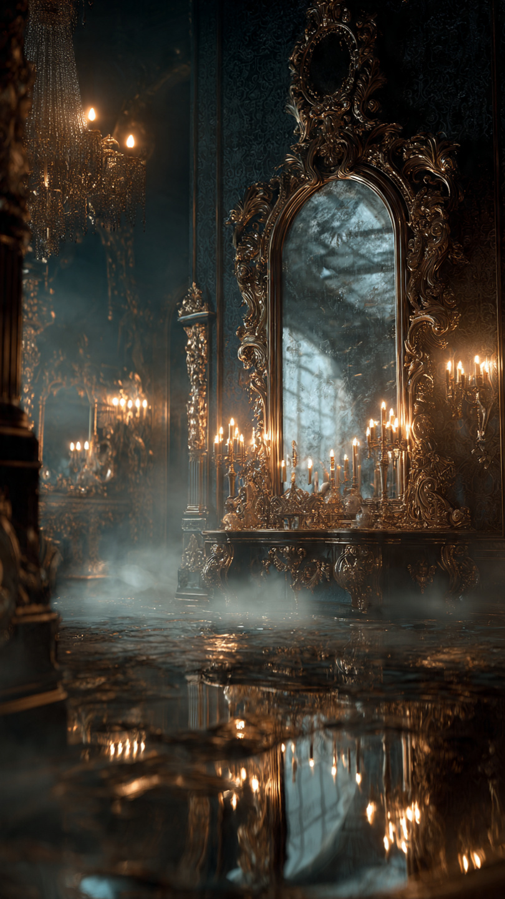
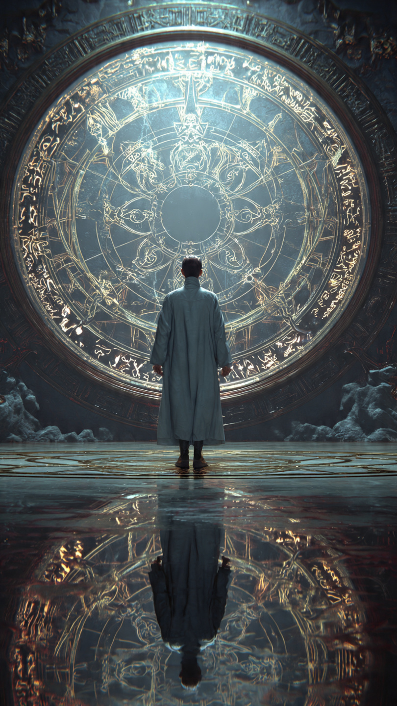

في قلب مدينة قديمة، كانت توجد مكتبة مهجورة لا يقترب منها أحد.
لم تكن كبيرة.
ولم تكن فخمة.
لكنها كانت تخفي في أعماقها غرفة لم تُفتح منذ مئات السنين.
وكانت الأسطورة تقول:
"إذا نظرت إلى المرآة الموجودة داخلها... سترى مستقبلك.لكنك ستدفع ثمنًا لن تدركه إلا بعد فوات الأوان."
ضحك معظم الناس من هذه الحكاية.
وقالوا إنها مجرد خرافة.
إلا شابًا يُدعى كريم.
كان فضوليًا بطبعه.
ويؤمن أن وراء كل أسطورة حقيقة مخفية.
وعندما سمع بالقصة، قرر أن يبحث عن تلك المرآة بنفسه.
في ليلة ممطرة، حمل مصباحًا قديمًا وتسلل إلى المكتبة.
كانت الرفوف مغطاة بالغبار.
والكتب ممزقة من أثر الزمن.
لكن في نهاية الممر وجد بابًا حديديًا صغيرًا.
كان عليه نقش غريب يشبه عينًا مفتوحة.
وبمجرد أن لمس المقبض...
انفتح الباب وحده.
دخل كريم بحذر.
وفي وسط الغرفة رأى مرآة ضخمة بإطار فضي مزخرف.
لكن سطحها لم يكن يعكس صورته.
بل كان مظلمًا تمامًا.
اقترب منها أكثر.
ووضع يده عليها.
فتحول السطح الأسود إلى مياه هادئة.
ثم بدأت تظهر صورة.
لم يرَ نفسه كما هو الآن.
بل رأى نفسه بعد سنوات.
يرتدي ملابس فاخرة.
ويجلس على كرسي يشبه عرشًا.
حول عنقه قلادة ذهبية.
والناس يصفقون له.
كان يبدو ناجحًا وسعيدًا.
ابتسم كريم وقال:
"إذن... هذا هو مستقبلي."
لكن في اللحظة نفسها...
اختفت الصورة.
وعادت المرآة كما كانت.
شعر بدوار شديد.
ثم خرج من الغرفة بسرعة.
وفي صباح اليوم التالي...
لاحظ أمرًا غريبًا.
كان يحاول تذكر وجه والدته...
لكنه لم يستطع.
تذكر أنها موجودة.
وتذكر اسمها.
لكن ملامح وجهها...
اختفت تمامًا من ذاكرته.
اعتقد في البداية أنه مجرد إرهاق.
لكن عندما عاد إلى المكتبة في الليلة التالية...
وجد كلمات جديدة ظهرت على إطار المرآة.
كانت تقول:
"كل رؤية... تأخذ ذكرى."
ثم بدأت المرآة تضيء من جديد...
وكأنها تدعوه لينظر إليها مرة أخرى.
📷 الصورة رقم 1

وقف كريم أمام المرآة، وقلبه ينبض بسرعة.
كان يعلم أن النظر إليها مرة أخرى قد يجعله يفقد شيئًا آخر.
لكنه كان يريد أن يعرف الحقيقة.
أخذ نفسًا عميقًا.
ثم رفع عينيه نحو سطحها اللامع.
بدأت الأمواج الفضية تتحرك ببطء.
ثم ظهرت صورة جديدة.
رأى نفسه يقف فوق منصة كبيرة، والناس يهتفون باسمه.
كان قد أصبح أشهر رجل في المملكة.
يملك القصور.
والثروة.
والسلطة.
لكن الغريب...
أنه كان يقف وحده.
لا يوجد إلى جواره أي صديق.
ولا فرد من عائلته.
ولا حتى ابتسامة على وجهه.
اختفت الصورة فجأة.
وشعر كريم بألم حاد في رأسه.
خرج مسرعًا من الغرفة.
وفي الطريق إلى منزله...
قابله صديقه المقرب "سامي".
ابتسم سامي وقال:
"أين اختفيت منذ يومين؟"
نظر إليه كريم باستغراب.
كان يعرف اسمه...
لكنه لم يتذكر أي موقف جمعهما.
ولا كيف أصبحا صديقين.
وكأن سنوات كاملة من الذكريات قد مُسحت من عقله.
عاد إلى المكتبة في اليوم التالي وهو يشعر بالخوف.
لكن هذه المرة لم يكن وحده.
فقد وجد رجلًا عجوزًا يجلس أمام المرآة.
كانت لحيته بيضاء طويلة، ويرتدي عباءة رمادية قديمة.
قال العجوز دون أن يلتفت إليه:
"لقد بدأت تدفع الثمن."
اقترب كريم وسأله:
"من أنت؟"
أجاب:
"أنا آخر حارس لهذه المرآة."
"ومنذ عشرات السنين، أحاول منع الناس من استخدامها."
ثم أشار إلى إطار المرآة.
وقال:
"إنها لا تُريك المستقبل مجانًا."
"بل تأخذ منك الذكريات التي صنعت شخصيتك."
"وفي النهاية..."
"لن تتذكر من تكون."
ارتجف كريم.
وقال:
"ولماذا لا تحطمونها؟"
تنهد الحارس وقال:
"جرب الكثيرون."
"لكن المرآة لا تتحطم."
"إنها مرتبطة برغبة البشر في معرفة الغد."
"وكلما ازداد طمع الناس في رؤية المستقبل..."
"ازدادت قوة المرآة."
وقبل أن يكمل حديثه...
اهتزت الغرفة كلها.
وتشققت أرضيتها.
وانفتح ممر حجري مظلم أسفل المرآة.
ومن داخله خرج صوت بارد يقول:
"لقد رأيت المستقبل مرتين...وحان وقت الرؤية الأخيرة."
ثم بدأت المرآة تتحول إلى باب أسود...
يفتح ببطء أمام كريم.
📷 الصورة رقم 2

نظر كريم إلى الباب الأسود الذي تشكل داخل المرآة.
كان الظلام خلفه عميقًا، وكأنه لا نهاية له.
حاول أن يتراجع، لكن الحارس العجوز أمسك بكتفه وقال:
"إذا دخلت الآن... ستعرف الحقيقة كاملة."
"لكن بعد أن تعرفها، لن تستطيع العودة كما كنت."
تردد كريم للحظات.
ثم أخذ نفسًا عميقًا، وخطا إلى الداخل.
وجد نفسه في ممر طويل تحيط به آلاف المرايا.
لكن كل مرآة لم تكن تعكس صورته.
بل كانت تعرض لحظة من حياته.
أول يوم في المدرسة.
ابتسامة والدته.
لعبه مع أصدقائه.
ضحكة والده.
كل الذكريات التي بدأ ينساها كانت محفوظة هناك.
اقترب من إحدى المرايا ولمسها.
فاختفت الذكرى وتحولت إلى غبار من الضوء.
ظهر الحارس بجانبه وقال:
"المرآة لا تسرق الذكريات لتؤذي الناس."
"بل تستخدمها لتصنع المستقبل الذي رأيته."
"فكلما أخذت منك جزءًا من ماضيك..."
"أعطتك احتمالًا جديدًا للمستقبل."
"لكن الإنسان الذي يفقد ماضيه..."
"يفقد نفسه أيضًا."
وفي نهاية الممر، جلس رجل عجوز على عرش من الزجاج.
اقترب كريم منه ببطء.
ثم تجمد مكانه.
كان الرجل يشبهه تمامًا.
لكن شعره أبيض، ووجهه مليء بالتجاعيد.
ابتسم الرجل وقال:
"أنا... أنت."
"هذا هو مستقبلك إذا واصلت البحث عن كل إجابة قبل أن تعيشها."
قال كريم بصوت مرتجف:
"إذن كل ما رأيته..."
"لم يكن قدرًا محتومًا؟"
هز الرجل رأسه وقال:
"المستقبل يتغير كل يوم."
"لكن الفضول الذي يجعلك تترك الحاضر لتطارد الغد..."
هو أخطر سحر في العالم."
ثم أشار إلى المرآة الأخيرة.
وقال:
"لديك فرصة واحدة."
"إما أن تحتفظ بكل ما رأيته، وتفقد آخر ذكرياتك إلى الأبد."
"أو تحطم المرآة من الداخل."
"وعندها ستنسى أنك رأيتها أصلًا..."
"لكن ذكرياتك وحياتك ستعود كما كانت."
ابتسم كريم وهو يتذكر كلمات والدته، رغم أنه لم يعد يتذكر ملامح وجهها.
أدرك أن أجمل لحظات الحياة ليست في معرفة المستقبل...
بل في عيشها.
رفع مصباحه بكل قوته.
وضرب المرآة الأخيرة.
وفي لحظة واحدة...
تحطم عالم المرايا كله.
وتحول إلى آلاف القطع اللامعة التي اختفت في الهواء.
استيقظ كريم في صباح اليوم التالي داخل المكتبة.
كانت الغرفة فارغة.
لا مرآة.
ولا باب.
ولا حارس.
خرج إلى الشارع.
فرأى والدته تبتسم له.
وتذكر وجهها بوضوح.
وركض نحو صديقه سامي وهو يضحك.
لم يتذكر المغامرة.
لكنه أصبح يعيش كل يوم وكأنه كنز لا يُقدّر بثمن.
ومنذ ذلك الحين...
لم يعد أحد يعثر على تلك المرآة.
ويقال إنها لا تظهر إلا لمن ينسى قيمة الحاضر...
ويظن أن المستقبل أهم من الحياة نفسها.